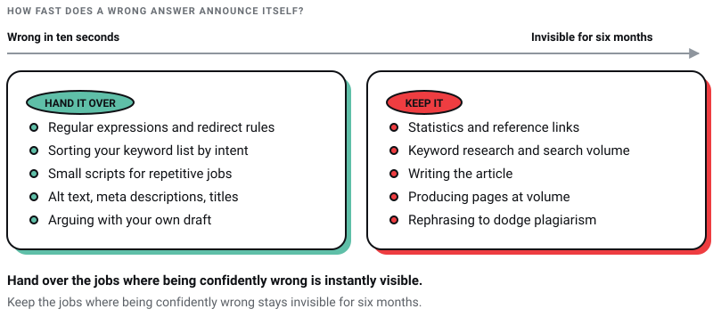
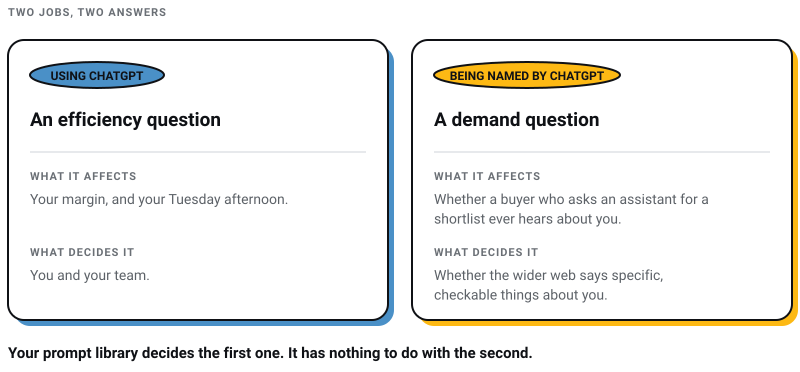

Digital Marketing
Digital Marketing
AEO vs GEO vs SEO: What Actually Matters in 2026 (And What Is Just Noise)
Learn about AEO vs GEO vs SEO. Discover what changed with AI search, what still matters, and how to optimize for Google AI Overviews, ChatGPT, and…

The useful question about ChatGPT and SEO changed, and most articles on the subject never noticed it happen.
In 2023 the question was how to use ChatGPT to do SEO work faster. In 2026 the question a business actually loses money on is whether ChatGPT names them when a buyer asks it for a recommendation. Those are two separate jobs with two separate answers, and merging them is why so much AI-and-SEO advice reads like it was written by somebody who has never had to defend a ranking report to a client.
This article is about the first job only: what an assistant is worth inside SEO work you are already doing. The second job — being cited by the machine rather than using it — I have set out separately in AEO vs GEO vs SEO and in how to get mentioned by ChatGPT. If that is what brought you here, go there instead. You will not find it below.
I run Pixel Street, a web design studio in Salt Lake, Kolkata. We sell SEO retainers, so read what follows with the suspicion that deserves. Most of the ChatGPT-for-SEO advice still in circulation was written against a model that could not open a web page, recommends a link-building service that was shut down and resurrected under different owners, and tells you to generate markup for a Google rich result that no longer exists. Every fact and date below was read off a linked source page on 30 July 2026.
ChatGPT earns its keep on the deterministic, structured, boring parts of SEO. Writing a regular expression. Turning a messy export into a table. Drafting a redirect rule. Sorting keywords you already have into intent buckets. Writing the small script that does a repetitive job three hundred times. In every one of those cases the output is wrong in ways you can see in about ten seconds, which is the property that makes a tool safe to use.
It is worth close to nothing for the two things people most want from it: deciding what to publish, and writing the thing that gets published. Not because the prose is bad. The prose is fine. "Fine" is precisely the quality level that Google's own generative-AI guidance says will not earn you anything.

| Task | Worth using it for? | Why |
|---|---|---|
| Regular expressions, redirect rules, sitemap and hreflang syntax | Yes, confidently | There is a right answer, and you can test it in a minute |
| Classifying a keyword list you already exported by search intent | Yes | Judgement on data you supplied, not data it invented |
| Small scripts that automate a repetitive job | Yes | Code either runs or it does not |
| Outlines, angles, counter-arguments to your own draft | Yes, as a starting point | You are using it to think, not to publish |
| Alt text, meta descriptions, title variations | Yes, with editing | Cheap, bounded, and you read every one anyway |
| Keyword research and search volume | No | It has no volume data; a plausible keyword list is not a researched one |
| Statistics and citations for your article | No, and this one is dangerous | It will produce real-looking figures attached to real-looking links |
| Writing the article | No | Commodity content is the thing Google's guidance singles out as not working |
| Producing pages at volume | No, and it is a policy risk | Scaled content abuse is a named spam policy |
These four assumptions sit underneath most of what is written about ChatGPT and SEO. Each of them stopped being true on a date you can check.
Guides still explain that its keyword research is limited "since ChatGPT cannot browse the web". That has not been true for a long time. OpenAI runs a crawler specifically for it: OAI-SearchBot, which OpenAI describes as "used to surface websites in search results in ChatGPT's search features", and notes that sites opted out of it "will not be shown in ChatGPT search answers". The developer documentation for the web search tool is blunter still: it "allows models to access up-to-date information from the internet and provide answers with sourced citations".
This changes the conclusion but not the recommendation. It can now look up a keyword. It still has no clickstream and no volume data, so what it returns is a reading of pages about keywords, not a measurement of demand. Buy the data. I have written up how I would go about that in the advanced keyword research guide.
Most of it dates from the GPT-3.5 and GPT-4 generation, and it shows in the caveats it chooses to worry about. Those models are going away. OpenAI's deprecations page lists gpt-4 and gpt-3.5-turbo with a shutdown date of 23 October 2026, and gpt-4-32k as already gone on 6 June 2025. The current lineup in OpenAI's model documentation is the GPT-5.6 family — Sol, Terra and Luna — with Sol named as "our flagship model for complex reasoning and coding".
Read any AI-and-SEO article that names a model. If the model it is reasoning about has been retired, the limitations it is warning you about were measured on something you cannot run, and the workarounds it recommends were built for a machine that no longer exists.
The HARO response template is a fixture of every ChatGPT prompt list for SEO. Cision emailed users on 8 November 2024 that the Connectively platform, formerly HARO, "will be permanently discontinued" as of 9 December 2024, so it could concentrate on CisionOne. Cision then sold HARO to Featured.com on 15 April 2025, and the service relaunched a week later.
The brand survived. The tactic did not survive intact, and a template that mass-produces expert quotes was always the weakest version of it. Journalists could spot generated pitches when the queries were still on Cision's platform, and there are fewer of them competing for attention now, not more.
"Generate FAQ Schema markup code" appears on every prompt list going, and for years it was decent advice. Google's own documentation records that the FAQ rich result "will no longer appear in Google Search starting May 7, 2026", and the documentation page for the feature was removed on 15 June 2026.
Existing markup is harmless and does not need ripping out. But generating FAQPage JSON-LD for a result that no longer renders is work with no payoff, and any 2026 checklist still recommending it has not been read since it was written. Write the FAQ for the reader. Skip the markup.
The most damaging idea in this whole subject travels under a benefit called "scalability and cost efficiency". The implication people take from that framing is that the win is volume — more pages, faster, cheaper. That is the one use of a language model that can actively cost you your rankings.
Google's spam policies name it. "Scaled content abuse is when many pages are generated for the primary purpose of manipulating search rankings and not helping users." The policy is careful about where the line sits: it targets "creating large amounts of unoriginal content that provides little to no value to users, no matter how it's created". The listed examples include "using generative AI tools or other similar tools to generate many pages without adding value for users".
Read that twice, because both halves matter. Using AI is not the offence. Google's helpful content guidance asks only that automation be disclosed and that you can say why it was useful here, and it says using automation to create content primarily to manipulate rankings is what breaks the policy. The offence is volume of low-value output. A human content mill and an AI content mill are the same mill.
Google's generative-AI optimization guide closes the argument from the other side. Its own summary of what matters most: "Creating content that people find unique, compelling, and useful will likely influence your website's presence in generative AI search in the long run more than any of the other suggestions in this guide." The same page says you "don't need to write in a specific way just for generative AI search", and that there is "no requirement to break your content into tiny pieces for AI to better understand it".
Put those together and the strategy the 2023 playbooks implicitly recommended — generate a lot, format it for machines, publish — is contradicted at every step by the search engine it was aimed at.
The prompt lists that circulate run to twenty-five entries and most of it is filler. These are the categories that survive contact with an actual retainer, and the test they all pass is the same one: a wrong answer announces itself immediately.
Regular expressions are the strongest case, and they were the strongest case in 2023 too. Search Console's Performance report takes a Custom (regex) filter that uses "the RE2 syntax", where "default matching is a 'partial match'" and is not case-sensitive unless you prepend (?-i). Asking for an expression that isolates question-shaped queries takes seconds, and pasting it into the filter tells you within one click whether it was right.
The same logic covers hreflang blocks, robots.txt rules, .htaccess redirects and XML sitemaps. Ask, paste, test, keep or discard. What you are buying is the trip to the documentation, not the judgement.
The single most useful prompt shape in SEO work is not a question at all. It is: here is my data, restructure it. Classify this exported keyword list by intent and give it back as a table. Group these two hundred URLs by template. Turn this crawl export into a redirect map. The model is not sourcing anything, so it cannot invent anything, and you can eyeball the output against the input.
This one is on every list and undersold on all of them. If a job involves doing the same fiddly thing several hundred times, describing the job and getting code back beats doing it. That is genuine hours saved, and the failure mode is an error message rather than a quiet falsehood.
Paste in what you wrote and ask for the strongest objection to it, the claim a hostile reader would attack first, and the thing a specialist would say is missing. This is the only content use I actually rate, and it works because you are still the one writing. Related: our full advanced SEO techniques guide covers where that draft should sit in a wider plan.
Of every prompt in general circulation, this is the one I would most like to see retired. It is the perfect trap: it produces exactly what you asked for, formatted beautifully, and a percentage attached to a plausible publisher and a plausible URL is indistinguishable from a real one until somebody clicks.
The rule we apply across this whole blog is simple and it is not negotiable. A figure you cannot read on a page you have personally opened gets deleted, not softened, not hedged, not attributed to "studies". An unsourced number that sounds right is worse than no number, because it is the one thing in your article a competitor can prove is wrong.
The long-tail queries a model suggests as easy to rank for routinely have no measurable demand, and difficulty is a function of who currently ranks, what links they have and how good their pages are — none of which the model can see. Browsing changed where the guesses come from. It did not turn them into data.
This prompt is on plenty of lists and it should not be on any of them. Read literally, it asks a machine to help you pass off someone else's work as yours, and the output is unoriginal content by definition — the exact material Google's scaled content policy describes. If the source is worth citing, cite it and link it. If it is not worth citing, you did not need it.
Google's helpful content guidance asks whether it is self-evident to visitors who authored your content, and whether you are explaining why automation was useful in producing it. That is a good test even ignoring rankings. If you would not put your name on the paragraph and defend it across a table, it should not go up under your name.
The first is that a chatbot on your site improves your rankings by reducing bounce rate. A chatbot is a support decision, not an SEO one, and nobody making that claim has a measurement behind it. The second is that duplicate content from chatbots is penalised because Google punishes repetitive responses. There is no such penalty. The documented risk is scaled content abuse, stated above in Google's own words, and it applies to volume of low-value pages however they were produced.
Here is the distinction most writing on this subject does not have the vocabulary for.
Using ChatGPT is an efficiency question. It affects your margin and your Tuesday afternoon. Whether it works out is between you and your team.
Being named by ChatGPT is a demand question. It affects whether a buyer in Kolkata who asks an assistant for a web design studio ever hears about you. That one is not decided by your prompt library. It is decided by whether the wider web says specific, checkable things about you — which is a different discipline with different work attached, covered in why ChatGPT recommends your competitor.

No, but the reassuring version of that answer — the one that compares this moment to the voice search hype and tells you nothing has really changed — is too comfortable, and I am not going to repeat it.
Something real is happening to clicks. The Pew Research Center analysed 68,879 searches by 900 US adults and found users clicked a result on 8% of visits where an AI summary appeared, against 15% where none did (Pew Research Center, 22 July 2025). And the sources those answers draw on have shifted: Ahrefs found in March 2026 that 37.9% of AI Overview citations came from pages ranking in the top ten, down from around 76% previously (Ahrefs).
What that means is narrower than the headlines. Ranking still matters and has simply stopped being sufficient. Google's own guide is explicit that optimizing for generative AI "is optimizing for the search experience, and thus still SEO". The work that survives is the work that was always underpriced: knowing something specific, saying it plainly, and being the page a machine has a reason to quote.
Will Google penalise content written with ChatGPT?
Not for the tool. Google's spam policy targets "creating large amounts of unoriginal content that provides little to no value to users, no matter how it's created", and its helpful content guidance asks that automation be disclosed and justified rather than banned. A single well-researched page you edited heavily is not the target. Two hundred thin pages produced in an afternoon are, and would have been before ChatGPT existed.
Can ChatGPT do keyword research now that it can browse?
It can look things up, which is different. It has no search volume data and no clickstream, so it can tell you what pages exist about a topic and cannot tell you how many people search for it or how hard it would be to rank. Use it to widen the list, then price the list with a tool that measures.
Should I still generate FAQ schema with it?
Not for Google. FAQ rich results stopped appearing on 7 May 2026 and the documentation was removed the following month. Existing markup is harmless. Write the FAQ because readers use it.
Which model should I be using?
Whichever is current when you read this, which is the point. OpenAI's documentation names GPT-5.6 Sol as the flagship, and lists gpt-4 and gpt-3.5-turbo as shutting down on 23 October 2026. Any advice keyed to a specific model expires with it; advice keyed to a task shape does not.
Does using ChatGPT help me get mentioned by ChatGPT?
No. They are unrelated. Being mentioned depends on what the web says about you and on whether OpenAI's crawlers are allowed to read your site at all — OAI-SearchBot, GPTBot and ChatGPT-User are separate opt-ins, and blocking the wrong one removes you from ChatGPT's answers entirely.
Treat it as an assistant with no memory of your business, no access to your analytics, no stake in the outcome and an unshakeable willingness to sound confident. Given that, hand it the jobs where being confidently wrong is instantly visible, and keep the jobs where being confidently wrong is invisible for six months.
The advantage available in 2026 is not speed. Everyone has speed now, which is exactly why it stopped being an advantage. What is scarce is a page that knows something. Four years ago I made a cold call to ITC with a fancy deck and zero credibility; today we design for them, and for Coca-Cola and Marico. That sentence describes one studio and no model could have written it for me. Whatever your equivalent sentence is, that is the part of your SEO that no amount of prompting produces — and it is the part worth your afternoon.
If you would rather hand the whole thing to someone, we do this work from Kolkata as a design and development team. Ask us what we would delete from your site before you ask what we would add.
11 min read 21 cited sources Digital Marketing
Author
Khurshid Alam is the founder of Pixel Street, an AI-native design & development studio. Design thinking on weekdays and spreadsheets on weekends.
He writes about growth, design, and AI, mostly because someone has to say the quiet parts out loud.
Digital Marketing
Learn about AEO vs GEO vs SEO. Discover what changed with AI search, what still matters, and how to optimize for Google AI Overviews, ChatGPT, and…
 Digital Marketing
Digital Marketing
Discover the 5 reasons ChatGPT recommends your competitors instead of your business—and how to improve AI visibility, SEO, GEO, and AEO.
 Digital Marketing
Digital Marketing
Want ChatGPT to recommend your brand? Learn how AI chooses businesses, where citations come from, and practical ways to increase your visibility.
 Digital Marketing
Digital Marketing
Imagine stumbling upon a secret formula that not only boosts your content’s visibility but also ensures it towers over the competition. That’s exactly…